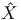
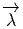
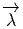

Figure 4.1: Relèvement horizontal et connexion
On veut donner un sens à l’idée de vouloir “garder un repère fixe” ou de “transporter son repère avec soi” ; il s’agit là d’une notion intuitive qui n’a, a priori, pas de sens lorsqu’on se déplace sur une variété différentiable quelconque munie de sa seule structure de variété. Intuitivement, on souhaite disposer d’un moyen d’assujettir le déplacement d’un repère choisi (déplacement qui a donc lieu dans l’ensemble des repères) lorsqu’on déplace l’origine de ce repère dans l’espace qui nous intéresse. Puisque nous avons maintenant à notre disposition la notion d’espace fibré, nous nous plaçons dans le fibré des repères correspondant à une variété M (la base du fibré en question) et nous souhaitons donc pouvoir disposer d’une méthode nous permettant d’associer, à tout chemin allant du point P au point Q sur la base, et à tout repère au point P, un certain chemin dans l’espace des repères. Choisir d’une telle méthode revient précisément à choisir ce qu’on appelle une connexion dans le fibré principal des repères linéaires. Le mot “connexion” – en anglais “connection”– est bien choisi puisqu’il nous permet effectivement de connecter (de comparer) des vecteurs (plus généralement des éléments d’un fibré associé) situés en des points différents de la variété. Le cas de l’espace affine Rn est très particulier puisqu’on peut disposer là de repères globaux permettant de comparer des vecteurs situés en des points différents ; il existe d’autres variétés pour lesquelles cette propriété est également valable et où le choix d’un repère mobile global est possible : ce sont les variétés parallèlisables déjà mentionnées dans le chapitre précédent. Nous allons, dans un premier temps, définir la notion de connexion de façon infinitésimale, comme étant un moyen d’associer un déplacement infinitésimal dans l’espace des repères à un déplacement infinitésimal du point de base (c’est à dire du point où le repère est situé). En fait, la seule structure utilisée dans la définition de la notion de connexion est celle de fibré principal et tout ce qu’on écrira aura encore un sens si on remplace le fibré des repères par un fibré principal quelconque (cela dit, il est bien commode de visualiser les choses en utilisant des repères, nous nous permettrons donc d’utiliser le mot “repère” pour désigner un élément d’un espace fibré principal quelconque).
Soit P le fibré principal des repères linéaires de la variété M, avec groupe structural GL(n). Soit e ∈ P un repère au point P∈ M (attention e ne désigne pas l’élément neutre de G !). L’espace tangent T(P,e), tangent à P en e est, intuitivement, l’ensemble des déplacements infinitésimaux de repères, issus du repère e. Nous savons déjà nous déplacer dans la direction verticale puisque cela correspond à un déplacement infinitésimal induit par l’action du groupe GL(n) : on fait “tourner” le repère e sans faire bouger le point P. Le sous espace vertical V (P,e) est donc déjà bien défini. Une connexion sera caractérisée par le choix d’un sous-espace supplémentaire à V (P,e) dans T(P,e), sous-espace qui sera bien évidemment qualifié d’“horizontal” et noté H(P,e). Par ailleurs, on veut que ce choix puisse être effectué, de façon continue et différentiable, pour tout repère, c’est à dire en tout point e de P. Enfin, on veut que ce choix soit également équivariant sous l’action du groupe structural : nous savons que GL(n) opère transitivement sur les fibres (par exemple sur les repères au point P), l’image du repère e sous l’action d’ un élément g du groupe structural est un repère e.g de la même fibre (Rg(e) = e.g) et l’application tangente dRg ≡ (Rg)∗ en e envoie donc l’espace tangent T(P,e) dans l’espace tangent T(P,e.g). Il est commode de noter simplement T(P,e)g = (Rg)∗T(P,e) ⊂ T(P,eg) puisque, formellement ∂(ge)∕∂e = g. La propriété d’équivariance requise signifie simplement ceci : on veut que le choix de l’espace horizontal H(P,e.g) en e.g puisse également être obtenu en utilisant l’action du groupe structural sur les fibres, en d’autres termes on impose H(P,e.g) = H(P,e).g
Noter que la discussion qui précède ne dépend pas du type particulier de fibré principal considéré et le lecteur est invité à remplacer partout le groupe GL(n) par un groupe de Lie quelconque (et le mot “repère” par les mots “élément du fibré principal P”). Le choix, en tout point e d’un fibré principal P, d’un tel espace vectoriel H(P,e) supplémentaire à V (P,e), c’est à dire, T(P,e) = V (P,e) ⊕H(P,e), est désigné sous le nom de distribution horizontale ; noter que le sens de ce mot “distribution” n’a ici aucun rapport avec celui utilisé en théorie de la mesure (la théorie des distributions !). Notre première définition d’une connexion principale est donc la suivante : c ’est la donnée, dans un fibré principal P, d’une distribution horizontale équivariante sous l’action du groupe structural.
Soit P = P(M,G) un fibré principal, on dispose donc d’une projection π : P → M et donc également de son application tangente π∗. Cette application linéaire envoie l’espace tangent T(P,e) sur l’espace tangent T(M,π(e)) ; en d’autres termes, elle nous permet d’associer, à tout déplacement infinitésimal d’un repère e dans l’espace des repères, le déplacement infinitésimal correspondant du point x = π(e) dans la variété M (x est le point où le repère est centré). Comme nous l’avons remarqué à plusieurs reprises, étant donnée une application d’une variété dans une autre, nous pouvons faire “voyager” les vecteurs dans la même direction –il s’agit d’un “push-forward”– et les formes dans la direction opposée (“pull-back”)
De façon générale, soit γ(t) une courbe dans M, on dira qu’une courbe Γ(t) dans P est un relèvement de γ(t) si Γ se projette sur γ (intuitivement “on” –un voyageur qui se promène sur M– s’est choisi un repère mobile quelconque en tout point du chemin qu’il suit). Supposons maintenant que nous nous sommes donnés une connexion (au sens donné dans la sous section précédente) dans le fibré principal P, nous savons donc définir l’horizontalité des vecteurs de TP ; on dira qu’un relèvement est horizontal si les vecteurs tangents au relèvement sont horizontaux. Considérons une courbe γ(t) dans M allant de P0 = γ(0) à P1 = γ(1) et son relèvement horizontal issu de e0 ∈ P, c’est à dire la courbe Γ(t) dans P. En utilisant les théorèmes habituels concernant les équations différentielles, on montre qu’il y a unicité du relèvement Γ de γ issus de e0. On dira que e1 = Γ(1) est le transporté par parallélisme de e0 le long de γ par rapport à la connexion choisie.
Nous définirons l’application de relèvement horizontal comme suit : soit x un point de M et e un repère quelconque en x (c’est à dire un élément de la fibre au dessus de x), soit vx un vecteur appartenant à l’espace tangent à M en x, on désignera par λe(vx) l’élément de l’espace tangent T(P,e) qui, d’une part, est horizontal et qui, d’autre part, se projette sur vx grâce à l’application π∗. Il est bien évident que ce vecteur est unique : Il suffit de choisir un relevé quelconque de vx en e (c’est à dire un vecteur quelconque V e de T(P,e) qui se projette sur vx, puis de le décomposer en une partie verticale V ev et une partie horizontale V eh = λ e(vx) (c’est le vecteur cherché) en utilisant la décomposition de T(P,e) en deux sous-espaces supplémentaires.
La distribution horizontale n’étant pas quelconque (elle est équivariante !), l’application de relèvement horizontal n’est pas quelconque non plus : le relevé du vecteur v en eg doit coïncider avec l’image, par l’application tangente du relevé de v en e. En clair, λeg(v) = (Rg)∗(λe(v)), qu’on peut écrire plus simplement
Toute cette discussion peut être résumée à l’aide de la figure ci-dessous.
Il existe plusieurs façons de définir la notion de connexion et nous venons d’en
mentionner deux (distribution horizontale équivariante et application de
relèvement horizontal) dont l’interprétation géométrique est intuitive ; en
pratique, cependant, c’est une troisième méthode qui va nous permettre de
traduire cette notion sous forme analytique. Nous supposons donc donnée
sur l’espace fibré principal P = P(M,G) une distribution horizontale
équivariante. La forme de connexion ω est une forme sur P et à valeurs dans
l’algèbre de Lie g du groupe structural (nous verrons que cette forme doit, en
outre, être équivariante). Elle est définie comme suit. Soit e un élément
de P (un repère de M), et Xα une base de Lie(G). Nous décomposons
l’espace tangent T(P,e) en un sous espace vertical Tv(P,e) = V (P,e)
engendré par les champs fondamentaux  α et un sous espace horizontal
Th(P,e) = H(P,E) défini par la donnée de la distribution horizontale. On
pose
α et un sous espace horizontal
Th(P,e) = H(P,E) défini par la donnée de la distribution horizontale. On
pose
Ainsi donc, on peut décomposer tout vecteur V ∈ T(P,e), comme suit : V = V α α(e) + V h avec V h ∈ H(P,e) et ω(V ) = V αX α. La forme ω est donc bien définie. Sa signification est claire : si on effectue un déplacement infinitésimal du repère e (sans changer l’origine), on associe à ce déplacement la rotation infinitésimale V αX α correspondante ; si, au contraire, on effectue un déplacement infinitésimal du repère e en déplaçant l’origine mais sans faire “tourner” le repère, on obtient ω(V ) = 0. Bien évidemment, on peut analyser les choses différemment en décidant que la connexion est définie par la forme de connexion ω, la rotation du repère e lors d’un déplacement infinitésimal V étant précisément mesurée par la rotation infinitésimale ω(V ) et ceci donne alors un sens au verbe “tourner”. La distribution horizontale étant équivariante, il s’ensuit que les noyaux de ω en e et en eg,g ∈ G sont reliés par
Nous reviendrons un peu plus loin (en 4.3.6) sur la théorie des connexions dans les fibrés principaux mais nous allons, pour des raisons aussi bien pédagogiques (c’est plus simple !) que pratiques (on mène en général les calculs sur la base), passer à une expression locale de la forme de connexion, puis, à partir de là, développer la théorie dans les fibrés vectoriels associés.
Le fait que tout fibré principal soit localement trivial va nous permettre -
moyennant le choix d’une section locale - d’écrire la forme de connexion ω, non
pas comme une forme sur P à valeurs dans g mais comme une forme sur M à
valeurs dans g. Choisissons donc une section locale M P et notons
de : TM
P et notons
de : TM TP l’application linéaire tangente. Rappelons que, si P est un fibré de
repères, la section locale e(x) n’est autre qu’un repère mobile e(x) = (eμ(x))
défini dans le domaine d’un certain ouvert et que, dans le cas où P désigne le
fibré des repères d’un certain “espace interne” (terminologie utilisée en physique
des particules) on dira plutôt que e(x) est un choix de jauge. Supposons qu’on
s’est fixé une connexion caractérisée par la forme de connexion ω, on défini le
potentiel de jauge A
TP l’application linéaire tangente. Rappelons que, si P est un fibré de
repères, la section locale e(x) n’est autre qu’un repère mobile e(x) = (eμ(x))
défini dans le domaine d’un certain ouvert et que, dans le cas où P désigne le
fibré des repères d’un certain “espace interne” (terminologie utilisée en physique
des particules) on dira plutôt que e(x) est un choix de jauge. Supposons qu’on
s’est fixé une connexion caractérisée par la forme de connexion ω, on défini le
potentiel de jauge A

A est donc une 1-forme sur M à valeurs dans g. Soit {Xα} une base de g et {∂∕∂xμ} une carte locale sur M, on pourra écrire :

En fait, il faudrait noter cet objet eA et non pas A de façon à se rappeler du
fait que la définition de A dépend du choix de la section locale e mais on omet
généralement d’y faire référence. Par contre, il est très important de savoir
comment se transforme A lorsqu’on effectue un choix différent. Posant A = eA et
A′ = e′A, et supposant que e′(x) = e(x).g(x) avec g(.) : M G, nous verrons un
peu plus loin que la propriété d’équivariance de ω se traduit pour A, par la
propriété suivante :
G, nous verrons un
peu plus loin que la propriété d’équivariance de ω se traduit pour A, par la
propriété suivante :

Pour finir, notons qu’en pratique les calculs sont effectués sur la base M et non sur le fibré P ; en d’autres termes on préfère utiliser le potentiel de jauge A plutôt que la forme de connexion ω, quitte à devoir recoller les morceaux puisque le fibré P considéré n’est pas en général trivial et qu’il faut donc définir A sur toutes les cartes d’un atlas de M. Le potentiel de jauge A est quelquefois désigné sous le nom “pull back de la forme de connexion” et il possède des interprétations physiques variées, dépendant, bien sûr, de la nature du fibré principal P (et donc du groupe structural G). Citons quelques unes de ces interprétations ainsi que la terminologie correspondantes :
G = U(1), A est le potentiel électromagnétique (ou champ de photons)
G = SU(3), A est le potentiel chromodynamique (ou champ de gluons)
G = SU(2) × U(1), A est le potentiel du champ électro-faible (champ des bosons γ, W± et Z).
Dans le cas des théories gravitationnelles où G désigne GL(n) et plus généralement un groupe de changement de repères d’une variété de dimension n, on parle plutôt de “symboles de Christoffel” pour désigner les composantes de A ; nous y reviendrons dans la section consacrée aux connexions linéaires.
Le lecteur aura compris (chose qu’il sait sans doute depuis longtemps) que les potentiels de jauge -et la théorie des connexions en général - permettent de représenter mathématiquement toutes les forces fondamentales de la physique.
Soit A = AμαX αdxμ le potentiel de jauge définissant une forme de connexion ω sur le fibré principal P = P(M,G) et soit E = P ×ρV un fibré vectoriel associé à P via la représentation ρ sur l’espace vectoriel V de dimension p. En utilisant la représentation ρ nous allons représenter le potentiel de jauge lui-même et obtenir ainsi une notion de connexion pour tout fibré vectoriel associé. Soit {Xα}α∈{1,dim(G)}, une base de g. Nous désignerons encore par ρ la représentation de g correspondant à celle de G ; ainsi ρ(Xα) = (ρ(Xα)ji) est une matrice p × p décrivant un endomorphisme de l’espace vectoriel V .
Dans ce paragraphe nous noterons :
μ,ν,ρ… les indices de base (variété M de dimension d)
i,j,k… les indices de fibre (espace vectoriel V de dimension p)
α,β,γ… les indices d’algèbre de Lie (LieG de dimension n)
L’image ρ(A) du potentiel de jauge par la représentation ρ s’appelle la matrice de connexion


La représentation ρ étant choisie une fois pour toutes (le fibré vectoriel E étant choisi) on peut omettre le symbole ρ lui-même, et si nous posons

Ses éléments de matrice sont des 1-forme puisque
Les nombres Ajμi sont les coefficients de connexion . Revenons une fois de plus sur ces problèmes de notations, de terminologie et d’habitudes : les physiciens des particules utilisent les Aμα, les spécialistes de la gravitation préfèrent les A jμi (la relation précédente permettant de faire le lien entre les deux) ; ces derniers ont d’ailleurs l’habitude de noter Γ (plutôt que A) les coefficients de connexion, ils utilisent donc des Γjμi, les indices ji étant les indices de fibre et μ l’indice de forme. Là où les choses se compliquent, c’est que le fibré E peut désigner le fibré tangent TM et que, dans ce cas, les indices de fibre peuvent appartenir au même jeu d’indices que les indices de forme (on a donc des objets Γρμν) mais il faut toujours se rappeler qui est qui. Les conventions, comme d’habitude, n’étant pas universelles, le lecteur est prié de se rappeler que, pour nous, l’indice de base c’est à dire encore l’indice de forme (noté μ ci-dessus) est situé en bas, et en dernière position. Nous reviendrons un peu plus loin sur le cas particulier E = TM (connexions linéaires). En attendant, il convient de se rappeler que, dans la notation Ajμi, l’indice μ se réfère au choix d’un repère naturel associé à une carte (eμ = ∂ __ ∂xμ) ou d’un repère mobile quelconque ([eμ,eν] = fμνρe ρ) et que les indices i,j se réfèrent au choix d’une base (ei(x)) dans la fibre de E située au point x de M.


Une section v est dite parallèle (ou transportée par parallélisme) lorsque ∇v = 0
Puisque ∇v possède un indice de forme (c’est un élément de Γ(E) ⊗ Ω1(M)), on peut l’évaluer sur les vecteurs tangents. Soit ξ = ξμ∂ μ un vecteur tangent. La dérivée covariante de v dans la direction ξ se note ∇ξv et s’obtient en évaluant ∇v sur ξ :

Notons que ∇ξv, ainsi que v, est une section de E alors que ∇v est une section-1-forme. On note souvent v;μi les composantes de ∇ μv = ∇ ∂__ ∂xμ v par rapport au repère {ei} de la fibre :

Nous attirons l’attention du lecteur sur le fait que la moitié des physiciens n’utilisent que des objets “indexés”. Ces derniers ne considèrent jamais ni v ni ∇μv mais seulement leurs composantes vi et v ;μi. Cette habitude n’entraîne généralement aucune confusion. Par contre, cela devient un problème si on décide, simultanément, d’utiliser également la notation ∇μ et de décider que ∇μvi est un synonyme de v ;μi. Nous estimons qu’il s’agit là d’un abus de notations particulièrement dangereux pouvant facilement conduire à des erreurs. En effet, vi est une composante de v, c’est à dire une fonction de x ; sa dérivée covariante existe bien, mais, puisqu’il s’agit d’une simple fonction, elle est égale à sa dérivée ordinaire, ainsi ∇μvi = ∂ μvi = v ,μi, ce qui n’est pas du tout égal à v ;μi. Si le lecteur ne souhaite pas manipuler des objets comme v ou ∇μv mais seulement leurs composantes, nous lui suggérons très fortement de se contenter de la notation “point-virgule”.
Lors de la définition de ∇ei = ejAij en 4.2.2, le lecteur a pu être surpris de l’absence du signe de produit tensoriel entre le vecteur ej qui est une section locale du fibré vectoriel considéré et la 1-forme Aij qui est une section locale du fibré cotangent T∗M (puisque A ij = A iμjdxμ).
Un peu plus loin, le lecteur a pu être de nouveau surpris, lors du calcul de ∇v et de ∇ξv, car nous avons allègrement commuté les formes sur M (par exemple eμ = dxμ) et les sections de E (les e i).
Mis à part le fait qu’il existe un isomorphisme canonique entre Γ(E) ⊗ Ω1(M) et Ω1(M) ⊗ Γ(E) et que le produit tensoriel utilisé est un produit au dessus de C∞(M) et non au dessus de ℝ, les manipulations précédentes, sur lesquelles nous ne nous étendrons pas, sont justifiées par le fait qu’il est possible de remplacer, dans la plupart des calculs de géométrie différentielle, l’algèbre commutative C∞(M) par l’algèbre commutative graduée Ω(M).
Les espaces E et T∗M étant, en général bien distincts, nous décidons d’identifier par exemple dxμe i ⊗ ej… et ei ⊗ ej…dxμ et nous n’utiliserons pas de symbole de produit tensoriel entre les p-formes sur M et les sections de E, traitant ainsi les dxμ comme des fonctions. Par ailleurs nous écrirons toujours les formes “en dernier”.
Cette identification nous permet d’écrire aussi bien

Il existe cependant un cas particulier où il existe une confusion possible entre les fibrés E et T∗M, c’est précisément le cas où on choisit E = T∗M. Dans ce cas, il faut se rappeler “qui est qui”, c’est à dire quels sont les indices de forme et quels sont les indices de fibre. Cette possible identification permet en fait d’enrichir la théorie. Nous y reviendrons.
Soient e = (ei) et e′ = (e i′′) deux repères dans les fibres. L’un s’obtient à partir de l’autre par une transformation linéaire Λ :


On obtient alors immédiatement

Après avoir défini ∇ sur les sections de E grâce à la relation ∇ei = ejAij, {ei(x)} désignant une base de la fibre au point x, nous considérons le fibré dual E∗ et l’action de ∇ sur ses sections. Désignons respectivement par σ et v une forme différentielle et un champ de vecteurs, on aura : ∇〈σ,v〉 = 〈∇σ,v〉 + 〈σ,∇v〉. Notons {ei(x)} la base duale au point x ; alors 〈ej,e i〉 = δji.
La quantité δji est une fonction constante, et donc ∇δ ji = 0. On impose


Notre but est ici d’étudier la dérivation covariante des éléments de E⊗p ⊗ (E∗)⊗q.
Considérons le fibré vectoriel E ⊗ E, c’est un fibré associé comme un autre... Ses éléments peuvent s’écrire
 ρ(x) ∈ EndV sur l’espace
vectoriel V , il agit via ρ(x) ⊗ 1 + 1 ⊗ ρ(x) sur l’espace vectoriel V ⊗ V , d’où il
s’ensuit que l’opérateur ∇ vérifie la propriété
ρ(x) ∈ EndV sur l’espace
vectoriel V , il agit via ρ(x) ⊗ 1 + 1 ⊗ ρ(x) sur l’espace vectoriel V ⊗ V , d’où il
s’ensuit que l’opérateur ∇ vérifie la propriété
On écrira par exemple, pour t = ei ⊗ ejtij,


Voici un dernier exemple : Soit t ∈ E ⊗ E ⊗ E∗,


La dérivée covariante d’un tenseur quelconque t = ei ⊗ ej…ek ⊗ el…t kl…ij… dans la direction du champ de vecteurs eμ est définie par
On introduit le symbole D sur l’exemple suivant : prenons
Il faut bien voir que tkij est ici considéré comme une zéro-forme sur le fibré principal P à valeurs dans un espace vectoriel (la fibre type du fibré vectoriel approprié).
Il est facile de généraliser cette notation Dtkij au cas où l’objet considéré n’est pas une 0-forme à valeurs dans un espace vectoriel mais une p-forme à valeurs dans un espace vectoriel.
Il n’existe pas de de convention d’écriture qui soit universelle, pour désigner cet opérateur. Certains auteurs, par exemple, le notent d(gras). Même remarque d’ailleurs pour l’opérateur de différentielle extérieure covariante d∇ défini ci-dessous, que certains auteurs notent souvent… D !
Soit E = E(M,F) un fibré vectoriel ; on a défini ∇ comme un opérateur :
ΓE ΓE ⊗ Ω1(M) ; on définit maintenant d∇ comme l’unique opérateur
prolongeant ∇ comme dérivation graduée de l’algèbre ⊕
pE ⊗ Ωp(M). Ainsi
donc
ΓE ⊗ Ω1(M) ; on définit maintenant d∇ comme l’unique opérateur
prolongeant ∇ comme dérivation graduée de l’algèbre ⊕
pE ⊗ Ωp(M). Ainsi
donc

Le lecteur peut, à juste titre, se demander pourquoi nous distinguons les deux notations d∇ et ∇. La raison en est la suivante : nous réservons la notation ∇ au cas où l’on agit sur une 0-forme. En effet, il est des cas où un objet mathématique donné peut être considéré soit comme une p-forme à valeurs dans un certain fibré, soit comme une 0-forme à valeurs dans un fibré différent. Ecrire ∇ω signifie (pour nous) “ω est une 0-forme à valeurs dans un certain fibré vectoriel (c’est à dire une section de ce dernier) et nous calculons sa différentielle extérieure covariante, qui est donc une 1-forme à valeurs dans le même fibré”. Cette distinction que nous opérons, au niveau des notations, permet d’éviter des confusions possibles, en particulier lorsque le fibré E peut désigner le fibré tangent, son dual, ou une puissance tensorielle de ces derniers.
Complément concernant la notation D introduite plus haut :
Si V est, par exemple, un élément de Γ(E ⊗E∗⊗E∗)⊗Ω2(M) = Ω2(M,E ⊗E∗⊗E∗), c’est à dire


En effet :


A titre d’exercice, calculons d∇u où u est un élément de ΓE ⊗ Ω1(M). On choisit un repère (ei) dans ΓE et un repère (eμ) dans Ω1(M) il peut s’agir d’un corepère naturel par rapport à une carte (eμ = dxμ) ou d’un corepère mobile quelconque eμ avec deμ = −1 2fνρμeν ∧ eρ. On écrit donc u = e iui μeμ. L’ordre des symboles n’a pas trop d’importance —tout au moins en géométrie commutative !— mais nous suggérons fortement au lecteur d’adopter cette écriture, c’est à dire l’ordre 1)2)3) avec 1), un élément de ΓE, 2), un coefficient, c’est à dire un élément de l’algèbre (commutative) C∞(M) des fonctions sur M, et 3), une p-forme. Le lecteur aura sans doute également noté que, conformément à nos habitudes, nous avons omis d’écrire explicitement le symbole ⊗ du produit tensoriel entre les sections de E (les ei) et les p-formes (ici, les eμ).
La première méthode permettant de calculer d∇u est d’utiliser la règle de dérivation généralisée qui définit l’opérateur d∇ :

La deuxième méthode pour calculer d∇u n’est pas vraiment une méthode puisqu’elle revient à utiliser une formule générale. Posons u = eiui en ne faisant pas apparaître explicitement l’indice de forme dans l’expression de u, bien que ui = u μieμ. On écrit immédiatement (voir l’expression “modèle” de DV jki donnée précédemment)

Une forme extérieure de degré p à valeurs dans un fibré vectoriel E peut, bien sur, être évaluée sur p vecteurs v1,v2,…,vp tangents à M. Par exemple, si u ∈ Ω1(M,E), en évaluant d∇u ∈ Ω2(M,E) sur deux vecteurs v 1 et v2, on obtient
![|---------------------------------------------|
d∇u (v1,v2) = ∇v1u (v2) − ∇v2u (v1) − u([v1,v2])
-----------------------------------------------](source592x.png)
en effet,
Plus généralement, si u ∈ Ωp(M,E),
![d∇u (v1,v2,...,vp+1) = Σpi+=11(− 1)i+1∇viu(v1,...,vˆi,...,vp+1) +
Σ (− 1)i+ju ([v ,v ],v ,...,ˆv,...,ˆv ,...,v )
1≤i≤j≤p+1 i j 1 i j p+1](source594x.png)
Pour conclure cette section, nous attirons l’attention du lecteur sur le fait que, malgré la notation utilisée, le carré de l’opérateur d∇ n’est pas nul. C’est d’ailleurs la présence d’un second membre non nul dans l’équation (d∇)2 = F qui va nous permettre un peu plus loin de définir l’opérateur de courbure.
La différentielle covariante ∇σ d’un élément de ΓE est un élément de ΓE ⊗ Ω1(M). En général, les fibrés E et TM sont distincts (sauf dans le cas particulier 4.4). Il n’empêche que Ω1(M) peut être considéré comme l’ensemble des sections de T∗M, et, qu’en conséquence, cet élément ∇σ, au lieu d’être considéré comme une 1-forme à valeurs dans le fibré vectoriel E peut être considéré comme une 0-forme à valeurs dans le fibré vectoriel T∗M ⊗ E, c’est à dire un élément de Γ(T∗M ⊗ E). Nous désignerons en général par le symbole Ωp(X,Y ) l’ensemble des p-formes sur X à valeurs dans Y . Avec ces notations, nous voyons qu’il est possible d’identifier Ω1(M,E) et Ω0(M,T∗M ⊗ E).
Jusqu’à présent, la connexion (le potentiel de jauge Aji = A jμidxμ) avait trait au fibré E, mais il peut se faire…(et généralement il se fait) que T∗M lui-même soit muni d’une connexion (un potentiel de jauge Γρν = Γ ρμνdxμ). Nous étudierons plus loin, et en détails, le cas particulier des connexions linéaires (du type Γρμν), mais dans le présent paragraphe, nous souhaitons seulement attirer l’attention du lecteur sur l’existence d’une ambiguïté (le fait qu’une 1-forme à valeurs dans un fibré puisse aussi être considérée comme une 0-forme à valeurs dans un fibré différent) et sur le fait que cette ambiguïté permet, en quelque sorte, d’enrichir la théorie. Reprenons l’exemple de σ ∈ Γ(E) ; on a u = d∇σ = ∇σ ∈ Ω1(M) ⊗ Γ(E). En tant que 1-forme à valeurs dans le fibré vectoriel E, nous pouvons faire appel à la théorie des différentielles extérieures covariantes et calculer d∇u = (d∇)2σ, qui est un élément de Γ(E) ⊗ Ω2(M). Cependant, en considérant u comme une 0-forme à valeurs dans le fibré T∗M ⊗ E, nous pouvons — dans la mesure où les deux fibrés E et T∗M sont équipés de connexions — calculer la différentielle covariante ∇u = ∇∇σ. Lorsque σ ∈ Γ(E), le calcul de ∇σ ne fait appel qu’à la connexion Aji, mais celui de ∇u (avec u = ∇σ) fait appel simultanément à la connexion Aji sur E et à la connexion Γνμ sur T∗M. Plus généralement, si u désigne un objet ayant un certain nombre (p,q) d’indices de type E (ou E∗) et un certain nombre (p′,q′) d’indices de type TM (ou de type T∗M), nous pouvons le considérer comme une 0-forme à valeurs dans TMp′,q′⊗ Ep,q, et calculer ∇u, qui sera un élément de Γ(TMp′,q′⊗ Ep,q) ⊗ Ω1(M). Nous pouvons aussi, dans le cas où u est antisymétrique en s indices de forme (s indices de type T∗M), considérer u comme un élément de Γ(TMp′,q′−s ⊗ Ep,q) ⊗ Ωs(M) et calculer sa différentielle extérieure covariante d∇u qui sera un élément de Γ(TMp′,q′−s ⊗Ep,q) ⊗ Ωs+1(M). On imagine aisément la richesse des possibilités… Au niveau des notations, nous adoptons la convention suivante : si on écrit ∇u, c’est que u doit être considéré comme une 0-forme dans un fibré approprié (même si u = ∇σ) ; par contre, si on écrit d∇u, c’est que u doit être considéré comme une p-forme sur M et que d∇ est une différentielle extérieure covariante. En d’autres termes, l’utilisation de d∇ conduit toujours à des objets possédant une certaine antisymétrie, ce qui n’est pas le cas pour ∇. Il est bien évident que ces notations sont insuffisantes pour couvrir tous les cas possibles, mais en général le contexte devrait permettre de préciser.
Soit u = eiuμieμ ∈ ΓE ⊗ Ω1(M). En tant que tenseur-1-forme, on écrira plutôt u = eiui sans faire apparaître explicitement l’indice de forme ; on a déjà calculé sa différentielle extérieure covariante


Par ailleurs,

Notons que, conformément à nos conventions, nous avons écrit les vecteurs de base (les eμe i ≡ eμ ⊗e i) à gauche des composantes (les uμi) et la base des 1-formes (les eν) à droite des composantes.
On pourra utilement comparer l’expression de ∇u obtenue ci-dessus avec celle de d∇u calculée auparavant :

On voit que d∇u = −2Alt∇u ou Alt désigne l’opérateur d’antisymétrisation. De façon générale, si u ∈ Ωp(M,E), on peut fabriquer d∇u ∈ Ωp+1(M,E) ou ∇u ∈ Γ(T∗pM ⊗ E) ⊗ Ω1(M) ≡ Ω1(M,T∗pM ⊗ E) ; la relation entre les deux est

Notons enfin que d∇ ne fait explicitement intervenir que la connexion A sur E alors que ∇ fait appel à la fois à la connexion A sur E et à la connexion Γ sur TM. Il existe un cas particulièrement intéressant où les fibrés E et TM coıincident ; nous y reviendrons dans la section consacrée aux connexions linéaires.
Comme nous l’avons vu, l’opérateur
 Ωp+1(M,E) et vérifie la propriété
Ωp+1(M,E) et vérifie la propriété


Cette propriété de linéarité est absolument fondamentale. C’est elle qui, en définitive, est responsable du fait que la courbure est caractérisée par un tenseur. Par ailleurs, le fait que (d∇)2 envoie Γ(E) dans Γ(E) ⊗ Ω2(M) montre que, si on “gèle” les indices de forme (correspondant à l’espace Ω2(M)), cet opérateur envoie —linéairement— les sections de E dans les sections de E. En d’autres termes (d∇)2 peut être considéré comme une 2-forme à valeurs dans le fibré des endomorphismes de E.
Remarque : On peut directement définir la courbure sur un fibré principal en restant “dans le fibré principal” c’est à dire sans avoir besoin de se placer sur la base et sans même considérer les fibrés associés. Une telle définition, dans la lignée de celle donnée en section 4.2.1, peut alors se transporter au niveau des différents fibrés vectoriels associés, grâce au choix de la représentation définissant le fibré en question. Il s’agit là d’une méthode élégante mais un peu abstraite en première lecture … Nous y reviendrons un peu plus loin (cf. paragraphe 4.3.6). En attendant, nous préférons définir la courbure plus simplement, dans chaque fibré associé, en utilisant les résultats déjà obtenus pour l’écriture de la dérivée covariante et de la différentielle extérieure covariante.
Nous venons de voir que le carré de la différentielle extérieure covariante est un opérateur (en général non nul !) qui est linéaire par rapport aux fonctions sur la variété. Appliqué a une section d’un fibré vectoriel E, il lui fait correspondre une 2-forme (sur la base M) à valeurs dans E ; l’écriture locale de cet opérateur fera donc appel a deux jeux d’indices différents : des indices μ et ν en position basse, parce qu’il s’agit d’une 2-forme, et deux indices i et j, l’un en position haute et l’autre en position basse, en effet, les indices de forme étant fixés, l’opérateur agit comme un endomorphisme de la fibre (il transforme les sections en sections). Cet objet est, de surcroît, antisymétrique par rapport aux indices de forme μ et ν puisqu’il s’agit... d’une 2-forme ! La donnée de cet opérateur fera donc intervenir n(n − 1)∕2 + p2 nombres F jμνi si on suppose que dimM = n et que la fibre type est un espace vectoriel de dimension p.
L’objet fabriqué peut être considéré de bien des façons. En effet, si on gèle les indices de forme, on obtient Fμν qui est une matrice p × p dont les éléments de matrice sont les Fji μν. Si par contre, on gèle les indices de fibre, on obtient Fji qui est une 2-forme sur la base. Nous verrons même un peu plus loin encore d’autres façons de considérer cet objet. Certains auteurs réservent des notations différentes pour ces objets qui sont mathématiquement distincts. Nous ne le ferons pas car ne pas vouloir commettre de tels abus de notations nuit, à notre avis, à la compréhension. Chaque fois qu’on a un tenseur appartenant à un espace vectoriel E ⊗ F ⊗ G, on peut le considérer comme un élément de Hom((E ⊗ F ⊗ G)∗, ℂ) ou comme un élément de Hom(E∗,F ⊗ G) ou comme … Cela ne nous semble pas raisonnable de vouloir, à chaque fois, changer la notation désignant l’objet en question !
Nous poserons donc simplement

Nous calculons maintenant l’expression de l’opérateur de courbure F en terme de la connexion A. Soit ei une famille de sections (locales ou non) constituant, en chaque point x d’un certain voisinage de la base M une base de la fibre V x au dessus de x. On sait que (d∇)2 : ΓE = Ω0(M,E) → Ω2(M,E). On va calculer
Il vient :


Il existe essentiellement deux façons d’exprimer l’opérateur de courbure. la première, en fonction des coefficients de connexion (potentiels de jauge) est celle que nous venons de voir. La seconde, baptisée “équation de structure” exprime directement la courbure en fonction de l’opérateur de dérivée covariante. A titre d’exercice préliminaire, nous avons déjà calculé explicitement les composantes de la différentielle extérieure covariante d∇σ d’une 1-forme σ à valeurs dans un fibré vectoriel E. Soit {eμ} un co-repère mobile (base constituée de sections locales de T∗M) et {e i} un repère local du fibré E (base constituée de sections locales de E). Soit σ ∈ Ω1(M,E). On peut donc écrire σ = e iσμieμ. Nous avons déjà vu que
Supposons maintenant que la 1-forme σ, à valeurs dans E soit elle-même obtenue comme la différentielle d’une section v de E : σ = ∇v. Dans ce cas (d∇)2v = d∇σ. Nous utilisons le calcul précédent ; il vient
![∇ 2 ∇
(d )v (eμ, eν) = d σ (e μ,eν)
= ∇ μσ(eν) − ∇νσ (eμ) − σ ([eμ,eν])
= ∇ μ∇ νv − ∇ ν∇ μv − ∇ [μ,ν]v](source616x.png)
Mais, par définition,

Cette identité, désignée souvent sous le nom de deuxième identité de Bianchi (nous verrons la “première” dans le chapitre consacré aux connexions linéaires) est une identité satisfaite par l’opérateur de courbure. Elle s’obtient en utilisant la définition de F = dA + A∧A et les propriétés élémentaires suivantes : d2 = 0 et A ∧ (A ∧ A) = (A ∧ A) ∧ A.
Tout d’abord F = dA + A ∧ A ⇒ dF = d2A + dA ∧ A − A ∧ dA. On utilise alors une deuxième fois la définition de F en remplaçant dA par F − A ∧ A dans la dernière expression. Il vient dF = 0 + (F − A ∧ A) ∧ A − A ∧ (F − A ∧ A), d’où
On peut écrire explicitement les indices de forme : voir page 384.
Notons que, lorsque le groupe structural est abélien, A ∧ F − F ∧ A = 0 puisque ces formes sont à valeurs réelles. L’identité de Bianchi s’écrit alors simplement dF = 0, ce qui nous donne la “moitié” des équations de Maxwell décrivant le champ électromagnétique (celles qui ne font pas intervenir les sources). Dans le cas non abélien, et dans le contexte de l’étude des particules élémentaires (par exemple dans l’étude du champ chromodynamique), la même équation de Bianchi nous donne la “moitié” des équations de Yang-Mills (celles qui ne font pas intervenir les sources).
Soit ω une forme de connexion sur un fibré principal P et Ω = Dω la forme de courbure correspondante. Nous avons vu que la définition du potentiel de jauge A et de la courbure F faisait appel au choix d’une section locale


Nous avons étudié au 4.2.4 comment se transformaient les potentiels de jauge par changement de section, à savoir,


Nous avons tout d’abord défini la forme de connexion ω au niveau de fibré principal, puis le potentiel de jauge Aμα sur la base (A n’est rien d’autre qu’une écriture locale de ω), puis nous avons défini la matrice de connexion Ajμi dans chaque fibré associé. Il est possible d’adopter une démarche similaire pour la courbure associée à une connexion : il est possible de définir une 2-forme de courbure Ω au niveau du fibré principal, puis son écriture locale Fμνα sur la base, puis enfin le tenseur Fji μν = Fμναρ(X α)ji dans chaque fibré associé caractérisé par une représentation ρ du groupe structural. Bien entendu, l’objet ainsi obtenu doit coïncider avec la courbure introduite et étudiée dans les sous-sections précédentes où nous avons travaillé tout du long dans les fibrés vectoriels. Cela dit, nous avons préféré, dans le cadre de cet ouvrage, pour des raisons d’ordre aussi bien pédagogiques que pratiques, développer le formalisme de la courbure dans les fibrés vectoriels. Nous allons néanmoins énoncer quelques définitions et résultats généraux, de façon à ce que lecteur se fasse une idée de ce qu’aurait pu être une autre façon de présenter le sujet. Nous laissons au lecteur le soin de démontrer l’équivalence des différentes approches.
Compléments sans démonstration. Soit P = P(M,G) un fibré principal muni
d’une forme de connexion ω. Nous savons déjà que les noyaux de ω en e et en
eg,g ∈ G sont reliés par Kerωeg = (Kerωe)g. Par ailleurs, on sait que la
composée de ω avec l’application (Rz)∗ : LieG T(z,P) qui, à tout élément
de l’algèbre de Lie associe un vecteur tangent en z, doit coïncider avec
l’application identique. On en déduit la loi de transformation suivante pour
ω :
T(z,P) qui, à tout élément
de l’algèbre de Lie associe un vecteur tangent en z, doit coïncider avec
l’application identique. On en déduit la loi de transformation suivante pour
ω :

La différentielle covariante sur un fibré principal , que nous noterons D et non ∇
se définit comme suit. Si  est une p-forme sur P (à valeurs réelles ou complexes,
à valeurs dans un espace vectoriel, ou encore à valeurs dans une algèbre de Lie),
on définit D
est une p-forme sur P (à valeurs réelles ou complexes,
à valeurs dans un espace vectoriel, ou encore à valeurs dans une algèbre de Lie),
on définit D comme la différentielle extérieure (usuelle) de l’horizontalisée de
comme la différentielle extérieure (usuelle) de l’horizontalisée de
 . Cela signifie que pour calculer D
. Cela signifie que pour calculer D (w1,w2,…,wp,wp+1) on évalue la
différentielle d
(w1,w2,…,wp,wp+1) on évalue la
différentielle d sur l’horizontalisé des vecteurs w1,w2,…,wp+1.
sur l’horizontalisé des vecteurs w1,w2,…,wp+1.
 est horizontal, ni qu’il est
équivariant. Lorsque ρ est une représentation du groupe structural G
et que
est horizontal, ni qu’il est
équivariant. Lorsque ρ est une représentation du groupe structural G
et que  est horizontal et équivariant de type ρ, c’est à dire qu’il est
à valeurs dans l’espace vectoriel support de la représentation ρ et que
est horizontal et équivariant de type ρ, c’est à dire qu’il est
à valeurs dans l’espace vectoriel support de la représentation ρ et que
 zg(w1,…,wp) = ρ(g−1)
zg(w1,…,wp) = ρ(g−1) z(w1,…,wp), on démontre que
z(w1,…,wp), on démontre que
 s’annule dès que
l’un de ses arguments est un vecteur vertical : D
s’annule dès que
l’un de ses arguments est un vecteur vertical : D est donc une forme
horizontale.
est donc une forme
horizontale.
Aspect global La 2-forme de courbure sur P, que nous noterons Ω (et non F) est définie très simplement comme

![|----------1--------|
-Ω-=--dω-+-2[ω-∧-ω]-|](source644x.png)
Aspect local De la même façon que nous sommes passés de ω, défini sur P à son expression locale, le potentiel de jauge A (la 1-forme définie sur M par A(v) = ω(σ∗v)), nous pouvons passer de Ω (défini sur P) à son expression locale, qui est une 2-forme F définie sur M et à valeurs dans LieG. Choisissons en effet une section locale x ∈ M−→σ(x) ∈ P, et v1,v2, deux vecteurs en x. On pose
Si v1 et v2 sont deux vecteurs eμ,eν appartenant à un repère mobile {eμ}, on pose Fμν = F(eμ,eν). Cette expression appartient à LieG. Si on choisit une base {Xα} de cette algèbre de Lie, on peut décomposer Fμν sur cette base, et on écrit donc

Soit maintenant E = E(M,V ) un fibré vectoriel associé à P via une représentation ρ de G sur un espace vectoriel V de dimension p.
Aspect global La forme de connexion ω, à valeurs dans g devient ρ(ω) et, de la même façon, la forme de courbure Ω, à valeurs dans g devient ρ(Ω) et est à valeurs dans les endomorphismes de V . On a encore
![ρ(Ω ) = ρd(ω) + 1[ρ(ω ) ∧ ρ(ω)]
2](source649x.png)
Aspect local Pour obtenir l’expression locale de l’opérateur de courbure, il existe deux possibilités. La première est de transporter l’expression de F, un élément de Ω2(M,g), dans le fibré vectoriel caractérisé par la représentation ρ (il s’agit donc en fait de ρ(F) ∈ Ω2(M,End(V )) mais nous continuerons à le noter abusivement F) en posant
La deuxième possibilité est de représenter localement la 2-forme ρ(Ω). Notons à ce propos que
![Ai ∧ Aj = 1[A ∧ A ]i
j k 2 k](source651x.png)
![i j α i β j α β i
Aj ∧ A k = A (T α)j ∧ A (Tβ)k = A ∧ A (TαT β)k
1 α β i β α i
= 2(A ∧ A (T αTβ)k + A ∧ A (TβTα)k)
1 1
= -(A α ∧ Aβ[Tα,T β]ik) = -[A ∧ A]ik
2 2](source652x.png)
Ainsi
![1
F = dA + --[A ∧ A] ⇔ F ij = dAij + Aik ∧ Akj
2](source653x.png)
Rappelons une fois de plus que la courbure Ω, dans P, ne dépend que du choix de la connexion, alors que l’objet F qui lui correspond sur la base (ou dans un fibré associé) dépend également du choix d’une section locale σ. Nous notons encore F cet opérateur de courbure, mais un “puriste” rajouterait quelque part les symboles σ et ρ pour se rappeler que la définition dépend de la section locale σ (dépendance “de jauge”) et de la représentation ρ choisie.
Encore une fois, nous laissons au lecteur le soin de démontrer que cette définition de la courbure au niveau des fibrés associés coïncide avec celle donnée dans les sections précédentes.
L’opérateur D2 Les expressions données pour D et Dω conduisent à
l’identité de Bianchi que nous avons déjà étudiée auparavant (mais écrite à l’aide
de de F)
et Dω conduisent à
l’identité de Bianchi que nous avons déjà étudiée auparavant (mais écrite à l’aide
de de F)

 est horizontale et équivariante.
est horizontale et équivariante.
La différentielle covariante D agit sur les formes (n’importe quelles formes)
définies sur le fibré principal P. Certaines de ces formes sont verticales (c’est le
cas de la forme de connexion ω), et les autres sont horizontales (c’est le cas de la
forme de courbure). Par ailleurs, on sait comment associer, à toute p-forme λ sur
M à valeurs dans le fibré vectoriel E, une p-forme  sur P, équivariante, à
valeurs dans la fibre type ; par construction,
sur P, équivariante, à
valeurs dans la fibre type ; par construction,  est aussi une forme horizontale.
La différentielle covariante D agit aussi bien sur ω que sur Ω ou
est aussi une forme horizontale.
La différentielle covariante D agit aussi bien sur ω que sur Ω ou  . Cependant,
nous avons déjà introduit un opérateur D agissant sur les sections de fibrés
associés (ou plus généralement sur les sections-p-formes) ainsi que les règles
de calcul correspondantes. Pour un objet équivariant et horizontal, il
est facile de voir que les notations sont compatibles en ce sens que, si
λ = classe((z,
. Cependant,
nous avons déjà introduit un opérateur D agissant sur les sections de fibrés
associés (ou plus généralement sur les sections-p-formes) ainsi que les règles
de calcul correspondantes. Pour un objet équivariant et horizontal, il
est facile de voir que les notations sont compatibles en ce sens que, si
λ = classe((z, )) alors d∇λ = classe((z.D)). Par contre, il est dangereux
d’utiliser la notation D en dehors de ce contexte ; c’est ainsi, par exemple,
que nous nous garderons d’appliquer D (ou d∇) au potentiel de jauge A
lui-même (car il s’agit alors du pull-back, via une section locale, d’une forme
verticale).
)) alors d∇λ = classe((z.D)). Par contre, il est dangereux
d’utiliser la notation D en dehors de ce contexte ; c’est ainsi, par exemple,
que nous nous garderons d’appliquer D (ou d∇) au potentiel de jauge A
lui-même (car il s’agit alors du pull-back, via une section locale, d’une forme
verticale).
Nous avons déjà mentionné les diverses façons de considérer cet objet. Nous nous contentons ici de rassembler les diverses notations et formules essentielles. On pose Tα = ρ(Xα).
![F = (d∇)2
F μν = [∇ μ,∇ ν] − ∇ [μ,ν]
F ij = dAij + Aik ∧ Akj ⇔ F = dA + A ∧ A
1
F = -F μνdxμ ∧ dxν
2 α
F μν = FμνT α
F iμν = F α(Tα )i
j μν j](source663x.png)
Les physiciens des particules ont l’habitude de développer la courbure sur les générateurs de l’algèbre de Lie, et pour cette raison utilisent le plus souvent les composantes Fμνα. Par contre, les astrophysiciens, cosmologistes et autres spécialistes des phénomènes gravitationnels ont plutôt l’habitude d’utiliser les composantes Fji μν. Le lien entre les deux sortes de notations se fait grâce aux relations précédentes (rappelons que (Tα)ji désigne, dans le repère {ei} du fibré vectoriel, les éléments de matrice (i,j) de la matrice Tα, image du générateur Xα de LieG dans la représentation considérée.
Dans le chapitre précédent, nous avons vu qu’un espace fibré principal P permettait automatiquement de définir une opération de Cartan de l’algèbre de Lie g sur l’algèbre différentielle Ω(P) des formes différentielles sur P, c’est à dire un produit intérieur iX et une dérivée de Lie LX, indexés par X ∈ g obéissant aux relations usuelles. La seule structure de fibré principal nous a ainsi permis de définir et de caractériser les notions de formes invariantes, horizontales ou basiques.
Nous voulons maintenant généraliser ces opérateurs de façon à ce qu’ils puissent agir sur des formes sur P à valeurs dans une algèbre de Lie g, c’est à dire sur les éléments de Ω(P,g) = g ⊗ Ω(P).
Soit τ ∈ g ⊗ Ωs(P) et X ∈ g, on peut décomposer τ comme une somme de termes du type Y ⊗ α avec Y ∈ g et α ∈ Ωs(P). On définit :


![[Y1 ⊗ α ∧ Y2 ⊗ β ] = [Y1,Y2] ⊗ α ∧ β](source667x.png)
Une connexion algébrique ω sur l’algèbre différentielle Ω(P) est, par définition, la donnée d’un élément de g ⊗ Ω1(P) obéissant aux deux conditions suivantes
Cette définition est encore valable lorsqu’on remplace Ω(P) par une algèbre différentielle ℤ-graduée quelconque munie d’une opération de Cartan. Nous laissons au lecteur le soin de démontrer que la notion de forme de connexion, telle qu’elle a été définie précédemment coïncide bien avec la notion de connexion algébrique sur Ω(P).
De façon générale, on appelle courbure d’une connexion algébrique la 2-forme Ω à valeurs dans g définie par
![Ω = d ω + 1[ω ∧ ω ]
2](source669x.png)
Il s’agit là d’un important sujet mais nous ne ferons que donner quelques définitions générales et énoncer un théorème célèbre.
Soit z un point d’un fibré principal P = P(M,G) qu’on supposera muni d’une connexion ω. Le groupe d’holonomie H(z) de la connexion ω au point z est défini comme suit

Nous venons de considérer l’ensemble des points de P qui, d’une part, sont situés dans la même fibre que z et qui, d’autre part, peuvent être reliés à z par une courbe horizontale. On peut, de façon plus générale ne pas supposer que ces points sont dans la même fibre. On obtient ainsi la définition du fibré d’holonomie en z :

Soient Z1 et Z2, deux champs de vecteurs horizontaux et Ω la 2-forme de courbure associée à la connexion choisie. On démontre alors (théorème d’Ambrose-Singer) que les éléments de LieG qui sont de la forme Ωz(Z1(z),Z2(z)) engendrent l’algèbre de Lie du groupe d’holonomie au point z.
D’une certaine façon, le groupe d’holonomie en z fournit donc une estimation de la courbure en ce point. Ceci est d’ailleurs assez intuitif : si un transport par parallelisme le long d’une courbe fermée n’entraîne aucune “rotation” du repère, c’est que la région dans laquelle on se promène est assez plate …
Soit P = P(M,G), un espace fibré principal, H un sous-groupe de G et soit Q = Q(M,H) une réduction du fibré P. Nous savons qu’une telle réduction est associée au choix d’une section globale (que nous désignerons par Φ) dans le fibré en espaces homogènes E = E(M,G∕H) qui est associé à P via l’action à gauche de G sur G∕H. On rappelle que Q = p−1(Φ(M)) où p désigne la projection de P sur E = PmodH.
Soit maintenant ω une forme de connexion définissant une forme de connexion principale dans P. On dira que cette connexion est réductible et se réduit à Q si la restriction (au sens de la restriction des applications) de ω à Q définit une connexion principale dans le fibré Q. En particulier, ω, restreinte à Q doit être à valeurs dans l’algèbre de Lie du groupe H.
Au niveau des algèbres de Lie, nous pouvons écrire g = h ⊕ s où g et h désignent respectivement les algèbres de Lie de G et de H, et où s est un sous-espace vectoriel supplémentaire de h dans g, espace vectoriel qui peut être identifié avec l’espace tangent à l’origine de S = G∕H. Supposer la connexion ω réductible revient à supposer qu’elle ne possède pas de composantes le long de l’espace vectoriel s.
Soit ω une forme de connexion quelconque dans le fibré P et ωQ sa restriction au sous-fibré Q. On peut toujours décomposer

Soit Ω = dω + 1 2[ω ∧ ω] la courbure de ω et ΩQ sa restriction à Q. Il vient immédiatement :
![Ω = Ω + D θ + 1[θ ∧ θ ]
Q Φ Φ 2 Φ Φ](source674x.png)
Cette décomposition de la forme de connexion ω et de la courbure correspondante Ω peut être effectuée chaque fois qu’on a une réduction du fibré P (chaque fois qu’on a une section globale Φ de PmodH). La forme de connexion elle-même n’est pas nécessairement réductible : en général θΦ≠0.
Citons trois exemples particulièrement importants de ce type de construction. Nous n’aurons pas le loisir de beaucoup les discuter plus avant mais nous les proposons néanmoins au lecteur, comme thèmes de réflexion.
A priori, un fibré principal donné n’est pas nécessairement relié au fibré des repères linéaires d’une variété. Cela étant, il est certain que le fibré des repères linéaires fournit un exemple particulièrement remarquable d’espace fibré. Il en va de même, plus généralement, pour n’importe quel fibré principal associé au fibré tangent d’une variété et pour lequel, donc, le groupe structural est un sous-groupe de GL(n, ℝ).
On dira qu’une connexion est une connexion linéaire si elle est définie dans le fibré principal des repères linéaires ou dans un sous-fibré de ce dernier. Ce qu’il y a de particulier dans ce cas est que les indices de fibre (que nous avons noté i,j,k… dans les sections précédentes) peuvent coïncider —ou tout au moins être canoniquement associés — avec les indices de base (que nous avons noté μ,ν,ρ,… dans les sections précédentes). Dans le paragraphe consacré aux différentielles extérieures covariantes, nous nous sommes efforcés de bien établir une distinction entre ces deux types d’indices. Le fait de pouvoir les confondre, dans le cas des connexions linéaires, ouvre de nouvelles possibilités (on peut ainsi, par exemple, “contracter” un indice de fibre avec un indice de base) mais est également à l’origine de confusions dangereuses…
Bien évidemment, les connexions dans des fibrés vectoriels associés quelconques (non reliés au fibré tangent) sont aussi “linéaires” que “nos” connexions linéaires mais il se trouve qu’une grande partie de la planète (en particulier la communauté des physiciens théoriciens) a adopté cette terminologie, par ailleurs commode.
Nous venons de définir une connexion linéaire comme connexion définie dans le fibré des repères linéaires ou dans un sous-fibré de ce dernier. Il y a là une subtilité qu’il faut bien comprendre : il est certain qu’une forme de connexion à valeurs dans l’algèbre de Lie du groupe H, avec H ⊂ G, peut s’étendre à une forme de connexion à valeurs dans l’algèbre de Lie de G puisque tout fibré principal peut être élargi (relire à ce sujet la section consacrée au changement de groupe structural dans les fibrés principaux) et qu’il suffit alors de mettre à zéro les composantes supplémentaires de la forme de connexion choisie. Par contre, et même dans le cas où le fibré des repères linéaires peut être réduit (relire la même section), il n’est pas du tout évident que la forme de connexion puisse l’être. Nous reviendrons à ce problème dans la section consacrée à l’étude des connexion riemanniennes.
Il faut enfin attirer l’attention du lecteur sur le fait qu’il est a priori possible de fabriquer, à partir d’une variété différentiable de dimension n donnée, différents fibrés principaux ayant pour groupe structural GL(n, ℝ) et ne coïncidant pas entre eux. Par exemple, on peut choisir une variété non parallélisable (comme la sphère S4) et construire d’une part le fibré principal (non trivial) des repères linéaires P ainsi que le fibré principal trivial Q = S4 × GL(4, ℝ).
Une connexion linéaire étant un cas particulier de connexion principale, tout ce qui a été écrit précédemment à ce sujet reste vrai. Nous nous contenterons donc de re-écrire les formules les plus utiles dans le contexte présent.
Pour des raisons historiques, le potentiel de jauge se note plutôt Γ (et non A) et le tenseur de courbure se note plutôt R (et non F).


Re-écrivons, pour terminer, la loi de transformation des coefficients de connexion (avec, par exemple eν′′ = Λ ν′μe μ)
Si le repère choisi est un repère naturel {eμ = ∂ __ ∂xμ}, on a donc

Si le repère choisi est un repère mobile {eμ} avec fonctions de structure fμνρ définies par [e μ,eν] = fμνρe ρ, on a

L’expression R = dΓ + Γ ∧ Γ, ou, plus simplement, l’equation de structure pour la courbure,
![R (u, v) = [∇u, ∇v ] − ∇[u,v]](source684x.png)
où, comme d’habitude, on a noté h,μ = eμ[h], pour toute fonction h, que {eμ} soit un repère mobile ou un repère naturel (dans ce dernier cas, fμντ = 0). L’alignement des indices haut et bas dans la formule précédente est pour l’instant sans importance, car on n’a pas encore de métrique (de produit scalaire) pour identifier un espace vectoriel avec son dual, c’est à dire pour “monter” ou “descendre” les indices. Cela dit, c’est une bonne habitude d’écrire Γα βμ et fμνρ plutôt que Γ βμα et f μνρ car, dans la section suivante, consacrée aux connexions métriques, nous poserons Γαβμ = gαγΓγ βμ et fμνρ = gρσfμνσ
Nous avons déjà défini l’opérateur d∇ : Ωp(M,E) Ωp+1(M,E) agissant sur les
sections-p-formes d’un fibré vectoriel quelconque. Lorsque E = TM (ou une
puissance tensorielle quelconque d’icelui), ce qui a été précédemment écrit reste
vrai. La nouveauté vient du fait que, par suite de l’identification possible entre
indices de base et indices de fibre, un seul et même objet peut être regardé de
plusieurs façons différentes. Nous allons directement définir l’action de l’opérateur
D, agissant sur des objets indexés (par exemple Bμ
νρ) en décidant de ne
jamais faire apparaître les indices de forme : c’est ainsi que si nous nous
intéressons à une 2-forme à valeurs dans le fibré vectoriel TM ⊗ T∗M ⊗ T∗M,
objet dont la décomposition complète par rapport à un repère naturel
s’écrirait
Ωp+1(M,E) agissant sur les
sections-p-formes d’un fibré vectoriel quelconque. Lorsque E = TM (ou une
puissance tensorielle quelconque d’icelui), ce qui a été précédemment écrit reste
vrai. La nouveauté vient du fait que, par suite de l’identification possible entre
indices de base et indices de fibre, un seul et même objet peut être regardé de
plusieurs façons différentes. Nous allons directement définir l’action de l’opérateur
D, agissant sur des objets indexés (par exemple Bμ
νρ) en décidant de ne
jamais faire apparaître les indices de forme : c’est ainsi que si nous nous
intéressons à une 2-forme à valeurs dans le fibré vectoriel TM ⊗ T∗M ⊗ T∗M,
objet dont la décomposition complète par rapport à un repère naturel
s’écrirait


Pour ce qui est de l’opérateur D nous obtenons,
Nous laissons au lecteur le soin de généraliser (de manière évidente) ces formules pour un objet B quelconque ayant un nombre quelconque d’indices en haut et en bas. Dans le cas présent, l’objet obtenu est donc une 3-forme à valeurs dans TM ⊗ T∗M ⊗ T∗M et on pourrait le noter, de façon intrinsèque, sous la forme d∇B, avec, par conséquent

Pour lever l’ambiguïté concernant la notation d∇, il faudrait écrire d (p,q)∇ pour la différentielle extérieure covariante agissant sur les formes de degré quelconque à valeurs dans (TM)⊗p ⊗ (T∗M)⊗q.
Pour illustrer notre propos, nous considérons un premier exemple donné par un tenseur antisymétrique de rang 2, noté F = 1 2Fμνdxμ ∧dxν = Fμνdxμ ⊗dxν, sur la variété M. Nous pouvons considérer cet objet comme
Notre deuxième exemple sera un tenseur symétrique de rang 2 noté g = gμνdxμ ⊗dxν. Cet objet peut être considéré comme une 0-forme à valeurs dans le fibré T∗M ⊗T∗M, en l’occurrence, dans la partie symétrique de ce dernier, ou encore, de deux façons différentes, comme une 1-forme à valeurs dans le fibré T∗M. Pour être en accord avec nos conventions d’écriture, on devrait plutôt écrire g = (dxμ ⊗dxν)gμν lorsqu’on veut considérer g comme 0-forme. Dans ce cas, on posera


Le lecteur est maintenant familiarisé avec ce qui fait l’originalité des connexions linéaires par rapport aux connexions principales en général, à savoir la possibilité d’identifier “les indices de base” avec “les indices de fibre”. Il est donc largement temps d’examiner cette identification sous un angle un peu plus géométrique, ceci va nous conduire à découvrir un nouvel objet : la torsion.
Soit P = P(M,G) le fibré principal des repères sur M, ou un sous-fibré de ce
dernier. Soit e un élément de P, c’est à dire, un repère de M. Considérons un
vecteur u en e, c’est à dire un élément de T(P,e), c’est à dire encore,
intuitivement, un “petit déplacement” du repère e dans l’espace des repères.
Grâce à la projection π : P M qui, à un repère, associe son origine, ou plutôt,
grâce à son application tangente π∗, nous pouvons prendre l’image v = π∗u de u.
Le vecteur v est un vecteur tangent à M situé à l’origine du repère e :
v ∈ T(M,π(e)). Ce qu’il y a d’absolument unique dans le cas du fibré des repères,
c’est que nous pouvons maintenant décomposer v sur l’élément e de P d’où nous
sommes partis (puisque e est un repère !) : v = eμ.vμ, vμ ∈ ℝ. Nous avons donc
construit une application θ qui, à tout vecteur u tangent au fibré principal
P, associe un n-uplet de nombres (les composantes de v), c’est à dire
un élément de ℝn. Cette application θ est donc une 1-forme sur P à
valeurs dans ℝn et est désignée sous le nom de forme canonique (le mot
“canonique” faisant référence au fait que sa définition ne dépend d’aucun
choix de système de coordonnées) et quelquefois sous le nom de forme
de soudure puisqu’elle permet de “souder” la fibre type ℝn (considéré
comme espace de représentation pour le groupe linéaire) avec l’espace
tangent à la base. Cette forme θ est évidemment équivariante puisque
v = eμ.vμ = e
μΛ.Λ−1vμ. Elle définit donc une 1-forme sur M à valeurs dans le
fibré tangent TM = P ×Gℝn. A ce propos,nous suggérons au lecteur de relire la
discussion générale, section 3.3.10, décrivant la correspondance bi-univoque
existant entre sections de fibrés associés —ou p-formes à valeurs dans un fibré
associé— et les fonctions —ou les p-formes— équivariantes, définies sur le
fibré principal et à valeurs dans la fibre type. On identifie en général :
Ωeqp(P, ℝn) ≃ Ωp(M,TM).
M qui, à un repère, associe son origine, ou plutôt,
grâce à son application tangente π∗, nous pouvons prendre l’image v = π∗u de u.
Le vecteur v est un vecteur tangent à M situé à l’origine du repère e :
v ∈ T(M,π(e)). Ce qu’il y a d’absolument unique dans le cas du fibré des repères,
c’est que nous pouvons maintenant décomposer v sur l’élément e de P d’où nous
sommes partis (puisque e est un repère !) : v = eμ.vμ, vμ ∈ ℝ. Nous avons donc
construit une application θ qui, à tout vecteur u tangent au fibré principal
P, associe un n-uplet de nombres (les composantes de v), c’est à dire
un élément de ℝn. Cette application θ est donc une 1-forme sur P à
valeurs dans ℝn et est désignée sous le nom de forme canonique (le mot
“canonique” faisant référence au fait que sa définition ne dépend d’aucun
choix de système de coordonnées) et quelquefois sous le nom de forme
de soudure puisqu’elle permet de “souder” la fibre type ℝn (considéré
comme espace de représentation pour le groupe linéaire) avec l’espace
tangent à la base. Cette forme θ est évidemment équivariante puisque
v = eμ.vμ = e
μΛ.Λ−1vμ. Elle définit donc une 1-forme sur M à valeurs dans le
fibré tangent TM = P ×Gℝn. A ce propos,nous suggérons au lecteur de relire la
discussion générale, section 3.3.10, décrivant la correspondance bi-univoque
existant entre sections de fibrés associés —ou p-formes à valeurs dans un fibré
associé— et les fonctions —ou les p-formes— équivariantes, définies sur le
fibré principal et à valeurs dans la fibre type. On identifie en général :
Ωeqp(P, ℝn) ≃ Ωp(M,TM).
La 1-forme obtenue sur M se note encore θ et son expression, relativement au choix d’un repère mobile {eμ} et du corepère mobile dual {θμ}, est tout simplement

Le lecteur trouve peut-être un peu longue (tordue ?) cette variation sur l’application identique… mais il se trouve que c’est elle qui fait la spécificité du fibré principal des repères. Lorsque ce dernier est muni d’une connexion, la différentielle covariante de θ n’est pas nécessairement nulle et n’est autre que la torsion.
Reprenons :
Définissons la 2-forme de torsion

T est ainsi une 2-forme à valeurs dans le fibré tangent, on peut donc l’écrire


Ainsi
La différentielle extérieure ordinaire d n’agissant que sur les indices de forme, on a dθ = d(eμ.θμ) = e μ.dθμ et on peut donc écrire, encore plus simplement


Nous avons établi, en section 4.2.8, l’égalité suivante, valable pour la différentielle extérieure covariante d’une 1-forme σ quelconque, à valeurs dans un fibré vectoriel E : soit σ ∈ Ω1(M,E), alors
![d ∇σ(e ,e ) = ∇ σ (e ) − ∇ σ(e ) − σ([e ,e ])
μ ν μ ν ν μ μ ν](source713x.png)


Nous avons, en section 4.3.4 établi l’identité de Bianchi relative à la courbure F d’une connexion quelconque A. Rappelons qu’elle s’écrit dF + A ∧ F = F ∧ A. Dans le cas des connexions linéaires on obtient donc directement l’identité


Le membre de droite de cette identité s’écrit explicitement


On peut soumettre la deuxième identité de Bianchi (celle relative à la courbure) à un traitement similaire : le membre de gauche dR + Γ ∧ R se transcrit immédiatement en une somme cyclique de dérivées covariantes du type Rμ νρσ;τ et le membre de droite R ∧ Γ peut se retranscrire en une somme de termes du type Rμ νρσTρ τκ en utilisant la relation entre torsion et coefficients de connexion établie en 4.4.6. Il vient


Soit v ∈ Ωp(M,TM), on a

Ainsi donc, D2vα = Rα β ∧ vβ, comme il se doit.
Soit maintenant v ∈ Ωp(M,TM ⊗ T∗M), donc v = e α ⊗ θβv βα où vβα est une p-forme. Un calcul parfaitement analogue conduit à


La généralisation est évidente : si, par exemple, v ∈ Ωp(M,TM ⊗T∗M ⊗T∗M) c’est à dire v = eα ⊗ θβ ⊗ θγ.vα βγ, avec vα βγ ∈ Ωp(M), alors (d∇)2v = e α ⊗θβ ⊗θγD2vα βγ et D2vα βγ = Rα ρ ∧V ρ βγ −Rρ β ∧V α ργ −Rρ β ∧V α βρ
Soit S est un tenseur quelconque de rang (r,s), considéré comme section de E = TM⊗r ⊗ T∗M⊗s, c’est à dire S ∈ Ω0(M,E), nous voulons donner un sens à ∇∇S. Nous savons que ∇S est une 1-forme à valeurs dans E, (ainsi ∇S = d∇S ∈ Ω1(M,E), puisque que ∇ et d∇ coïncident sur les 0-formes), et que (d∇)2S ∈ Ω2(M,E), mais ∇, par définition, n’agit que sur les 0-formes (à valeurs dans n’importe quel fibré). Pour pouvoir appliquer ∇ sur ∇S il suffira donc de considérer les 1-formes à valeurs dans E comme des 0-formes à valeurs dans E ⊗ T∗M. Encore une fois, nous identifions Ω1(M,E) avec Ω0(M,E ⊗ T∗M) (l’application identique sera notée Id). Explicitement, si v = eIV I ∈ Ω1(M,E), avec V I = V μIθμ ∈ Ω1(M) et si “I” désigne un multi-indice relatif à une base de E, on écrira simplement v = eIθμV μI ∈ Ω0(M,E ⊗ T∗M), avec V μI ∈ Ω0(M). Pour ne pas alourdir les notations, on note encore v l’image de v par l’application identique ! Cette application identique déguisée Id se généralise d’ailleurs de façon évidente pour fournir un homomorphisme injectant l’espace vectoriel Ωp(M,E) dans Ω0(M,E ⊗ (T∗M)⊗p)). Il faut donc comprendre ∇∇S comme


Prenons h ∈ Ω0(M, ℝ) et donc ∇h ∈ Ω1(M, ℝ)Ω0(M,T∗M) avec
∇h = θαh
;α, et h;α = h,α = eα[h] Partant de ∇h ∈ Ω0(M,T∗M) on obtient
∇∇h ∈ Ω1(M,T∗M) Ω0(M,T∗M ⊗ T∗M), ainsi
Ω0(M,T∗M ⊗ T∗M), ainsi
![|-----------------------ρ--|
|h;αβ = eβ[e α[h ]] − eρ[h]Γα β|
----------------------------](source738x.png)


Nous reparlerons du hessien dans la section consacrée aux laplaciens (en page 383).
![h;αβ − h;βα = [eβeα − eαeβ][h] − eρ[h ](Γ ρ − Γ ρ )
ρ ρ ρ αβ βα
= [Γβα − Γαβ − fβα]eρ[h]](source746x.png)
Finalement, notons que h;α ∼ h,α, l’indice α étant fixé, est une brave fonction sur la variété (pas un vecteur tangent !). En conséquence, ∇βh,α = eβ[h,α] = eβ[eα[h]] et cette quantité, qu’on peut même noter ∇β∇αh n’est pas égale à h;αβ. A ce propos, relire la section 4.2.3 consacrée aux notations.
Le lecteur pourra généraliser sans peine les identités de Ricci relatives à des tenseurs S d’ordre quelconque : en plus d’un unique terme de type “TS;”, on voit apparaître, pour chaque indice du tenseur considéré, une contribution —signée— de type ‘RS”, au membre de droite de l’identité de Ricci. Par exemple, prenons S = eμ ⊗eν ⊗θρSρμν, il vient
Le tenseur de courbure F pour une connexion principale quelconque possède des composantes Fji μν et il est impossible de contracter l’indice i avec l’indice μ puisque ces indices sont de nature différente : l’un est un indice de fibre et l’autre un indice de base. Par contre, pour une connexion linéaire, on peut choisir le même repère dans les fibres et sur la base, il devient donc possible de contracter un indice de fibre avec un indice de base : à partir du tenseur de courbure R ≡ F de composantes Rσρ μν, on peut fabriquer un tenseur covariant de rang 2, le tenseur de Ricci , que nous noterons ρ et qui est donc défini par l’égalité

Un champ de vecteurs v est dit parallèle ou transporté par parallélisme le long d’un arc de courbe C : τ ∈ ℝ →C(τ) lorsque sa dérivée covariante est nulle dans la direction du vecteur tangent u = d _ dτ à C. Ce vecteur tangent possède des composantes uα = dCα dτ dans un repère donné. La loi du transport parallèle s’écrit donc
La courbe C(τ) est dite courbe autoparallèle si son vecteur tangent u est lui-même transporté par parallélisme le long de C. Ainsi
Soit G un groupe, que nous supposons ici compact, et G∕H un espace homogène. Au niveau des algèbres de Lie, grâce au choix d’un produit scalaire dans LieG on peut écrire LieG = LieH ⊕ s où s peut s’identifier avec l’espace tangent à G∕H en l’origine. La forme de Maurer-Cartan sur G est à valeurs dans LieG et on peut considérer sa projection sur LieH. On montre qu’on obtient ainsi une forme de connexion (dite canonique) sur le fibré principal G = G(G∕H,H). Par ailleurs nous supposons (cas usuel) que [LieH,s] ⊂ s et même que ∀h ∈ H,hsh−1 ⊂ s. En d’autres termes, l’espace vectoriel s est le support d’une représentation linéaire du groupe H (c’est la représentation adH). En conséquence, on obtient un homomorphisme de H dans Ends. Cet homomorphisme permet d’étendre le fibré principal G = G(G∕H,H) au fibré des repères linéaire au dessus de G∕H (c’est un fibré de base G∕H et de fibre type GL(s) avec s = dim(s)). La connexion canonique donne ainsi naissance à une connexion linéaire sur l’espace homogène G∕H.
Ce type de construction et les géométries qui lui sont associées constituent un vaste chapitre de la géométrie différentielle et nous renvoyons le lecteur à un ouvrage tel que [9] pour plus de détails. Notons pour finir qu’on obtient ainsi également une connexion linéaire sur G lui-même lorsqu’on considère la variété sous-jacente comme quotient de G×G par son sous-groupe diagonal (isomorphe à G).
REMARQUE : La théorie des connexions métriques en général et la géométrie riemannienne en particulier mériterait à elle seule plusieurs volumes… Malgré l’importance du sujet, la présente section est relativement brève et doit être considérée par le lecteur comme un simple survol permettant d’illustrer certaines des constructions générales précédentes. Nous voulons considérer la notion de connexion métrique comme un cas particulier de la notion de connexion réductible, et l’ensemble des repères orthonormés associés à une métrique comme un cas particulier de réduction d’espace fibré principal. Nous engageons le lecteur à discuter de façon analogue d’autres types de géométries (par exemple les structures presque complexes).
Soit FM = FM(M,GL(n, ℝ)) le fibré principal des repères sur la variété M. On considère une réduction de FM à un fibré principal de repères orthonormés OM = OM(M,SO(n)). Cette réduction est caractérisée par une métrique g qui, en chaque point, est donnée par une forme bilinéaire symétrique non dégénérée sur l’espace tangent. On sait que g peut être considérée comme une section globale du fibré en espaces homogènes E = E(M,GL(n, ℝ)∕SO(n)). Le lecteur aura noté que nous considérons une réduction à SO(n) et non à O(n), en d’autres termes, la variété est supposée orientable et orientée. Localement, c’est à dire relativement au choix d’un repère mobile (eα) ou d’un repère naturel ( ∂__ ∂xμ), g est donnée par
La matrice gμν étant non dégénérée en chaque point, nous pouvons considérer son inverse, notée (gμν). Ainsi gμνg νρ = δρμ. On obtient donc ainsi une forme bilinéaire symétrique sur l’espace cotangent. Cette forme est le plus souvent également notée g (mais il peut arriver de la noter g−1 !).

On se donne une connexion linéaire dans FM. Une métrique étant donnée, on suppose que cette connexion est compatible avec la réduction de FM à OM. On peut aussi supposer, de manière équivalente, qu’on se donne directement une connexion principale dans le fibré OM. On dit alors qu’on s’est donné une connexion métrique. Par construction, la métrique est orthonormée lorsqu’on l’écrit à l’aide des repères de OM. Soit {ea} un repère mobile orthonormé, alors g = ea ⊗ ebηab ou η est diagonal et constant (composantes ±1). Lorsqu”on considéré la métrique comme 0-forme à valeurs dans le fibré des tenseurs symétriques de rang 2, qui est inclus dans Ω0(M,TM ⊗ TM), on voit immédiatement que
La différentielle covariante de g est donc nulle, mais ceci peut alors s’écrire dans n’importe quel repère, orthonormé ou non {eα}. Ainsi, ∇g = (eα ⊗eβ)Dg αβ et

L’existence d’un produit scalaire non dégénéré g permet d’identifier un espace vectoriel avec son dual et de “monter” ou “descendre” les indices à volonté. On pose donc

Il ne devrait pas y avoir de confusion possible au niveau des notations : lorsqu’on écrit Γαβ, c’est que cet objet est une 1-forme (Γαβ = Γαβγeγ) et qu’on a utilisé la métrique pour abaisser le premier indice de fibre. Si on écrit, au contraire, Γγ, c’est qu’on parle alors du potentiel de jauge et qu’on a simplement fait apparaître l’indice de forme (qui est toujours en troisième — et dernière— position).
L’équation de compatibilité (condition de métricité) s’écrit alors

Si on se place dans un repère orthonormé, les fonctions gαβ sont des constantes. Il en va de même dans un “repère mobile de forme invariable” (précisément défini en imposant la constance des gαβ). Dans ce(s) cas, dgαβ = 0 et la condition de métricité s’écrit simplement

Une autre façon de retrouver de façon très naturelle (et sans calcul !) cette propriété d’antisymétrie est de se rappeler que les 1 − formes Γα β ne sont autres que les éléments de matrice Γα β = Γa(X a)βα où les X a constituent une représentation de l’algèbre de Lie du groupe structural, en l’occurrence SO(n), et ce sont donc, automatiquement, des matrices antisymétriques.
Nous verrons un peu plus loin que, pour une connexion bien particulière (la connexion de Levi-Civita) et dans des repères particuliers (les repères naturels), les coefficients de connexion possèdent également une propriété de symétrie sur les deux derniers indices.
Si, contrairement à ce que nous supposions ci-dessus, on se donne séparément une métrique g et une connexion linéaire Γ quelconque, il n’y a aucune raison pour que la connexion soit réductible. En d’autres termes, il n’y a aucune raison de supposer que cette connexion soit compatible avec la métrique. Si ∇ désigne la différentielle covariante associée à Γ, on définit alors le tenseur de non-métricité

Etant donnée une métrique et une connexion linéaire compatible (qui, a priori, possède de la torsion), nous allons voir qu’il est possible d’exprimer les coefficients de connexion en terme de la métrique, de ses dérivées premières, du tenseur de torsion et des fonctions de structure du repère mobile choisi.
Utilisant la métrique, on définit

Nous avons vu que la condition de métricité s’écrivait ∇g = 0, c’est à dire, en terme de composantes gαβ;γ = 0. Ceci implique


Les trois lignes ci-dessus sont quasiment identiques mais attention à notre façon de “descendre” les indices (comparer la définition de Tαβγ et celle de fαβγ). Nos conventions concernant la position des indices ne sont pas universelles…
L’expression ci-dessus des coefficients de connexion Γαβγ a été calculée en travaillant dans un repère quelconque (ainsi, par exemple, gαβ,γ = eγ[gαβ]). En travaillant dans un repère naturel on a, plus simplement, gμν,ρ = ∂ __ ∂xρ[gμν] et fμνρ = 0.
L’expression
Le tenseur
Le calcul précédent montre donc qu’une connexion linéaire compatible avec une métrique donnée est entièrement caractérisée par cette dernière et par la torsion de cette connexion (on peut toujours faire disparaître les fonctions de structure du repère mobile en se plaçant dans un repère naturel).
Le calcul précédent montre aussi que, étant donnée une métrique, si on impose une torsion nulle, on obtient une unique connexion compatible qui s’exprime entièrement en terme de la métrique. Cette (unique) connexion s’appelle la connexion de Levi-Civita ou encore la connexion riemannienne. Re-exprimons ce résultat sous la forme suivante :
Soit OM le fibré principal des repères orthonormés associé à une métrique donnée. Alors, parmi toutes les connexions possibles sur le fibré OM, il en existe une et une seule qui soit sans torsion. On l’appelle la connexion de Levi-Civita.
Pour cette connexion, et en repère naturel, on a donc simplement

De façon générale, l’expression du tenseur de torsion en terme des coefficients de connexion et des fonctions de structure du repère mobile (expression rappelée ci-dessus) montre que, si on utilise la connexion de Levi-Civita (Tμνρ = 0) dans un repère naturel (fμνρ = 0), les coefficients de connexions possèdent la symétrie suivante :


Il n’est pas difficile de démontrer que, dans le cas où la connexion n’est pas compatible avec la métrique, il faut rajouter, au second membre de l’équation donnant l’expression de 2Γμνρ, la quantité

Nous avons déjà analysé en détail les propriétés du tenseur de courbure, pour une connexion linéaire quelconque, et il n’y a pas grand chose à rajouter lorsqu’on suppose que cette connexion est une connexion métrique, si ce n’est la propriété d’antisymétrie suivante : en posant

En résumé, pour une connexion quelconque :

Pour une connexion métrique, sans torsion, c’est à dire pour la connexion de Levi-Civita, les deux identités précedentes impliquent une propriété de symétrie par échange de paires (utiliser les identités de Bianchi) :
Par ailleurs, les expressions des identités de Bianchi se simplifient pour la connexion de Levi-Civita (puisque la torsion disparaît). Il vient :
Bianchi-1 sans torsion (R ∧ θ = 0) :
Bianchi-2 sans torsion :
Nous avons déjà défini la notion de courbe autoparallèle dans la section précédente. Il s’agissait là d’une notion liée à la donnée d’une connexion linéaire. Dans le cas où cette connexion est la connexion de Levi-Civita déterminée par une métrique, une telle courbe est, par définition, une géodésique de la variété riemannienne. En fait, la terminologie (“le plus court chemin”) vient du fait qu’une telle courbe est également solution d’un problème variationnel (δ ∫ (gμνdxμdxν)1∕2) mais nous n’étudierons pas cet aspect de la question. Notons que, dans le cas où nous nous donnons séparément une métrique (et donc la connexion de Levi-Civita correspondante), ainsi qu’une seconde connexion compatible avec la métrique donnée, mais possédant de la torsion, il faut distinguer entre les courbes autoparallèles associées à cette dernière et les géodésiques. Une telle distinction est physiquement importante lorsqu’on traite du mouvement des particules à spin en Relativité Générale : les particules scalaires suivent en effet les géodésiques du champ gravitationnel mais les particules ayant un moment cinétique intrinsèque suivent les autoparallèles d’une connexion avec torsion.
Plaçons nous dans un repère naturel. Nous avons déjà établi l’équation des autoparallèles dans la section consacrée aux connexions linéaires. L’équation des géodésiques est donc identique, à ceci près que les coefficients de connexion Γμ νρ doivent être donnés par les symboles de Christoffel {νρμ}. On voit donc que pour que géodésiques et autoparallèles coïncident, il faut et il suffit que le tenseur de contorsion Sαβγ soit nul. Ce sera évidemment le cas si la torsion est nulle mais cette condition n’est pas nécessaire.
De façon plus générale, le lecteur pourra se convaincre que si, ∇ et ∇′ désignent deux connexions, une condition nécessaire et suffisante pour que les autoparallèles des deux connexions coïncident est que la partie symétrique s(x,y) = (c(x,y) + c(y,x))∕2 du tenseur différence c(x,y) = ∇xy −∇′xy s’annule (noter que c(x,y) est bien un tenseur).


Par ailleurs mentionnons qu’une variété pour laquelle le tenseur d’Einstein est proportionnel à la métrique est, par définition, une variété d’Einstein . L’étude des variétés d’Einstein —un sujet fascinant de la géométrie Riemannienne— sort également du cadre de cet ouvrage et nous renvoyons le lecteur aux articles spécialisés ainsi qu’au beau livre d’Arthur Besse (autre mathématicien imaginaire, comme Bourbaki) intitulé “Einstein Manifolds” [1].
Remarque : si la connexion, supposée métrique, possède une torsion, la propriété pour R d’être invariant par échange de paires n’est plus vérifiée, le tenseur de Ricci n’est plus symétrique et, dans ce cadre, on ne connait pas de généralisation naturelle du tenseur d’Einstein.

La fonction K associe un nombre à tout sous-espace de dimension 2 de l’espace tangent. Soit u,v une base orthonormale d’un 2-plan, on définit alors la courbure sectionelle de ce sous-espace de dimension 2 par K = K(u,v) et on démontre que K est indépendant du choix de u et v dans ce sous-espace. On démontre que, géométriquement, K n’est autre que la courbure Gaussienne de la 2-surface engendrée par les géodésiques ayant des vecteurs tangents de la forme λu + μv. Nous renvoyons le lecteur à un traité élémentaire de géométrie des surfaces pour les notions relatives aux courbures de Gauss etc.
Nous nous contenterons de rassembler ici quelques définitions et résultats généraux. Cette section mériterait également un traitement plus approfondi. Nous suggérons au lecteur de relire la section 1.11 consacré à la définition de l’élément de volume ϵ.
Soit ϵ la forme volume canonique d’une variété riemannienne orientée. On définit une opération {,} associant un nombre réel à la donnée d’une k-forme et d’une n − k-forme.


On définit un isomorphisme ⋆ : Ωk(M) → Ωn−k(M) comme la composition de l’isomorphisme ω ∈ Ωk(M) →{ω,.}∈ (Ωn−k(M))∗ et de l’isomorphisme musical entre Ωn−k(M) et son dual, induit par la métrique.
Explicitement, soit {ϵμ} une base orthonormée de sens direct et {ωμ} sa base duale. Soit μ1 ≤ μ2… ≤ μk ⊂{1, 2,…n} et soit ν1 ≤ ν2… ≤ νn−k la suite complémentaire. Alors


Soit {ϵμ} une base orthonormée de sens direct et {ωμ} sa base duale, alors
Soit S ∈ Ωk(M), alors, ⋆S est le seul élément de Ωn−k(M) tel que

Explicitement, soit S une k-forme de composantes Sμ1μ2…μk. Son dual est la (n − k)-forme ⋆S de composantes

Notons que si ω est une n-forme, et qu’il existe donc un nombre réel λ tel que ω = λϵ, alors ⋆ω = (−1)qλ.
On voit que ⋆⋆ 1 = (−1)q1 et que ⋆⋆ϵ = (−1)qϵ. Plus généralement, pour une k-forme S,

Notons que, dans le cas d’une signature purement euclidienne (n, 0), il n’y a pas à ce préoccuper du signe supplémentaire (−1)q.
Pour des applications à la physique de l’espace-temps (signature (3, 1)), les formules suivantes sont particulièrement utiles :
pour une 1-forme J, ⋆Jαβγ = Jμϵ μαβγ et ⋆ ⋆ J = J.
pour une 2-forme F, ⋆Fαβ = 1 2!Fμνϵ μναβ et ⋆ ⋆ F = −F.
pour une 3-forme B, ⋆Bα = 1 3!Bλμνϵ λμνα et ⋆ ⋆ B = B.
Soient ω,η ∈ Ωk(M). On pose

On en déduit un produit scalaire global dans Ωk(M). Nous supposons maintenant que la variété M est compacte. Soient ω,η ∈ Ωk(M). On pose
On démontre que ⋆ est unitaire pour (.,.) :

δ : Ωk(M) Ωk−1(M) est défini comme l’adjoint de d pour le produit scalaire
global, c’est à dire
Ωk−1(M) est défini comme l’adjoint de d pour le produit scalaire
global, c’est à dire


Notons également que
Notons enfin qu’on peut définir δ même si M n’est pas orientable. En effet, la définition est locale et changer l’orientation revient à changer ⋆ en −⋆, de sorte que δ est inchangé.
Le lecteur pourra vérifier que, relativement à un système de coordonnées locales xμ, la codifférentielle d’une k-forme

Le lecteur pourra également vérifier qu’on peut remplacer les dérivées ordinaires par des dérivées covariantes dans la formule ci-dessus (remplacer la virgule par le point virgule) car, bien que ωρμ1μ2…μp−1,μ soit en général différent de ωρμ1μ2…μk−1;μ, tous les termes dépendant de la connexion disparaissent dans la somme.
On peut considérer une k-forme comme un tenseur covariant (particulier) c’est à dire comme une 0-forme à valeur dans le fibré (T∗M)⊗k. On peut donc considérer la différentielle covariante ∇ω ainsi que la dérivée covariante ∇vω dans la direction d’un vecteur v. Soit {eμ} un repère mobile orthonormée et ∇ la connexion de Levi-Civita, la formule précédente, donnant l’expression de δω peut se re-écrire sous la forme

Il est parfois commode d’utiliser un symbole Tr (trace) qui contracte les deux derniers indices d’un tenseur donné à l’aide de la métrique (on suppose que ces deux derniers indices sont tous deux covariants ou tous deux contravariants, sinon, on n’a pas besoin de métrique). La relation précédente s’écrit alors

La codifférentielle δ n’était définie que sur les formes extérieures, mais la formule δω = −Tr∇ω a un sens pour des tenseurs quelconques. Soit T un tenseur de rang quelconque. On pose

On définit le laplacien de De Rham (encore appelé laplacien de Hodge ou opérateur de Beltrami) comme

ΔDR est self adjoint pour (.) : (ω, ΔDRη) = (ΔDRω,η).
ΔDR est un opérateur positif (on suppose maintenant que M est proprement riemannienne) : (ω, ΔDRω) ≥ 0.
On dit que ω est harmonique si et seulement si ΔDRω = 0 c’est à dire si et seulement si ω est à la fois fermée (dω = 0) et cofermée (δω = 0). Théorème de Hodge (M est supposée compacte) :

Toute classe de cohomologie de De Rham Hp contient un unique représentant harmonique.
Nous définissons un peu plus bas le laplacien usuel (naïf) qu’on notera Δ sur les fonctions (C∞(M) = Ω0(M)). Attention, il s’avère que le laplacien de De Rham sur les fonctions et le laplacien naïf diffèrent par un signe : Δf = −ΔDRf.
Au lieu de considérer des formes différentielles (éléments de Ωp(M)) on peut considérer des formes différentielles à valeur dans un fibré vectoriel (éléments de Ωp(M,E)). L’existence d’une métrique sur la base ainsi que d’un produit scalaire dans les fibres permet là encore, avec les mêmes hypothèses, de définir un produit scalaire global. On définit alors une codifférentielle covariante δ∇ comme l’adjoint de la différentielle extérieure covariante d∇. On définit ensuite un laplacien de De Rham
Mentionnons l’existence du laplacien de Lichnerowicz associé à une métrique g et agissant sur les tenseurs symétriques 2 × 2 :
Nous avons consacré une section aux différentielles covariantes généralisées (section 4.2.9). Nous avons vu, en particulier, que si ξ est une 0-forme à valeurs dans un fibré vectoriel E, on pouvait tout d’abord considérer ∇ξ qui est un élément de Ω1(M,E) puis identifier Ω1(M,E) avec Ω0(M,E ⊗T∗M), ce qui nous autorise, dans la mesure où les fibrés E et T∗M sont tous deux équipés de connexion, à considérer l’objet ∇∇ξ, qui sera donc un élément de Ω1(M,E ⊗ T∗M) qu’on peut identifier avec Ω0(M,E ⊗ T∗M ⊗ T∗M). De façon générale, nous avons défini le hessien de ξ comme Hess(ξ) = ∇∇ξ Dans le cas le plus simple où ξ est une fonction scalaire f et si nous choisissons la connexion de Levi-Civita, la torsion est nulle, auquel cas les dérivées covariantes secondes commutent (voir section 4.4.8) et Hess(f) est une forme bilinéaire symétrique sur le fibré tangent.
Plus généralement, soit ξ ∈ Ω0(M,E), e i un repère local dans les fibres de E et {θα} un corepère mobile sur M. Nous avons calculé explicitement Hess(ξ) en section 4.4.8. Le laplacien naïf sur Ω0(M,E) (on dit souvent “laplacien brut”) est défini par l’égalité


Dans le cas particulier d’une fonction f, et en utilisant un repère naturel, on obtient simplement
En jouant avec les différentes sortes de différentielles covariantes généralisées, on peut définir plusieurs autres sortes de Laplaciens. On peut aussi trouver les formules reliant ces différents Laplaciens…
Les équations de Maxwell décrivent la physique de l’electromagnétisme. Nous avons vu comment écrire la moitié de ces équations, en l’occurence, les équations “sans terme de source”, dF = 0, qui résultent directement de la définition F = dA du champ electromagnétique F en terme du potentiel electromagnétique A. Ces équations, qui sont en quelque sorte des équations structurelles, n’utilisent pas la notion de métrique. A ce propos, si on souhaite écrire explicitement ces équations “avec des indices”, dans un repère naturel, on obtiendra indifféremment


Les charges électriques, quant à elles, sont les “sources” du champ et ces charges sont décrites par une 1-forme J = Jμdxμ (le “vecteur courant”). Le couplage entre champ et charges doit être tel que toutes les équations de Maxwell soient vérifiées. En dimension 4 = 3 + 1 (physique de l’Espace-Temps) le dual de Hodge de J est une 3-forme et les équations de Maxwell “avec sources” s’écrivent
Le lecteur pourra bien entendu écrire les deux équations “quadridimensionelles” à
l’aide des composantes  et
et  de F (les champs électriques et magnétiques) et à
l’aide des composantes ρ (la charge) et
de F (les champs électriques et magnétiques) et à
l’aide des composantes ρ (la charge) et  (le courant electrique tridimensionnel)
de J et redécouvrir ainsi les quatre équations de Maxwell habituelles. On rappelle
que
(le courant electrique tridimensionnel)
de J et redécouvrir ainsi les quatre équations de Maxwell habituelles. On rappelle
que

En ce qui concerne les théories de jauge non abéliennes (par exemple la chromodynamique décrivant les interactions fortes élementaires entre quarks), le potentiel de jauge A et la courbure F sont maintenant des formes à valeurs matricielles (l’algèbre de Lie de SU(3) dans le cas de la chromodynamique). Il en est de même du vecteur courant J. Les équations de Yang-Mills “sans sources” s’écrivent
Les équations de Yang-Mills “avec sources” s’écrivent

Notons que, même lorsque J = 0, c’est à dire dans “le vide”, l’ensemble des équations de Yang-Mills DF = 0 et D ⋆ F = 0 constitue un système d’équations différentielles hautement non trivial dont la discussion générale sort du cadre de cet ouvrage.
Soit P = OFM le fibré des repères orthonormés correspondant à une certaine
métrique g sur une variété orientée M,  =
=  FM, le fibré des repères spinoriels
correspondant (on suppose qu’il existe — c’est à dire que la variété est spinorielle
— et qu’il est unique — c’est à dire que la variété possède une seule structure
spinorielle).
FM, le fibré des repères spinoriels
correspondant (on suppose qu’il existe — c’est à dire que la variété est spinorielle
— et qu’il est unique — c’est à dire que la variété possède une seule structure
spinorielle).
Nos considérations sont valables pour une signature quelconque (p,q) et on désignera par η la forme diagonale de la métrique g, c’est à dire la matrice donnant l’expression de la métrique g dans un repère orthonormé, ainsi, ηab = ±1. Pour simplifier on posera Spin(η) = Spin(p,q). Rappelons que nous avons également une inclusion Spin↑(η) ⊂ Spin(η) et que l’existence d’une structure spin↑ sur une variété implique non seulement que M est orientée mais encore orientée temporellement (le “temps” pouvant avoir plusieurs directions).
Soit V un espace vectoriel réel, complexe (ou même quaternionique) sur lequel est donnée une repésentation ρ de l’algèbre de Clifford Cliff(η). On sait (voir la section consacrée aux groupes Spin) que Spin(η) est un sous-ensemble de Cliff(η), on a donc ainsi automatiquement une représentation, encore notée ρ, du groupe Spin(η). Nous pouvons également, dans le cas pair, parler de spineurs de Weyl (demi-spineurs) mais il n’est pas utile d’établir ici une distinction entre la droite et la gauche ni d’ailleurs de mentionner les propriétés de réalité des spineurs considérés. Nous travaillerons donc avec des spineurs définis comme section d’un fibré vectoriel SM = ×Spin(η)V .
On choisit un ensemble de générateurs {γa} de Cliff(n), avec

![Σ = 1∕4 [γ ,γ ]
ab a b](source843x.png)
Une connexion spinorielle est une connexion principale sur le fibré  . Il existe une
bijection entre l’ensemble des connexions sur le fibré P des repères orthonormés
et l’ensemble des connexion sur le fibré des repères spinoriels. En effet, si ω
est une connexion sur P, si λ désigne l’homomorphisme d’espaces fibrés
. Il existe une
bijection entre l’ensemble des connexions sur le fibré P des repères orthonormés
et l’ensemble des connexion sur le fibré des repères spinoriels. En effet, si ω
est une connexion sur P, si λ désigne l’homomorphisme d’espaces fibrés
 ∈
∈ → e ∈ P, et si V
→ e ∈ P, et si V  ∈ T(
∈ T( ,
, ), on obtient une connexion
), on obtient une connexion  sur
sur  en
posant
en
posant

![^Γ = ρ(Γ ) = 1Γ ab[γa,γb]
8](source853x.png)
![|---------------------------|
|^Γ = 18Γ ab[γa,γb] = 14Γ abγaγb |
-----------------------------](source854x.png)


En vertu de l’étude générale sur les différentielles et dérivées covariantes, on voit immédiatement que si Ψ est un champ de spineurs (une section du fibré vectoriel SM), sa différentielle covariante est donnée par

Soit (ea) un repère mobile orthonormé (en général local), on peut construire les dérivées covariantes ∇aΨ = ∇eaΨ et on définit l’opérateur de Dirac D par :

 = D2 s’appelle le laplacien spinoriel et on
peut vérifier que sa relation avec le laplacien naïf −ηab∇
a∇b est donnée par la
formule
= D2 s’appelle le laplacien spinoriel et on
peut vérifier que sa relation avec le laplacien naïf −ηab∇
a∇b est donnée par la
formule

L’opérateur de Dirac est sans doute l’opérateur différentiel le plus important de la géométrie (et de la physique !) Ne pouvant y consacrer plus de place ici, nous renvoyons le lecteur à des ouvrages (ou articles) spécialisés (le résumé qui précède s’inspire de [4]).
On part du fibré principal  des repères spinoriels et on utilise l’action
adjointe du groupe structural Spin(η) sur l’algèbre de Clifford Cliff(η)
(voir plus haut) pour construire le fibré associé en algèbres de Clifford
Cliff(M) =
des repères spinoriels et on utilise l’action
adjointe du groupe structural Spin(η) sur l’algèbre de Clifford Cliff(η)
(voir plus haut) pour construire le fibré associé en algèbres de Clifford
Cliff(M) =  ×Spin(η)Cliff(η). On peut définir une inclusion γ du fibré tangent
TM dans le fibré de Clifford Cliff(M) et on note γμ = γ( ∂__
∂xμ). Plus simplement,
on peut considérer les γμ comme des “matrices gamma” dépendant du
point x ∈ M. Soit {ea} un repère mobile orthonormé et ∂μ un repère
naturel, alors ∂μ = eμae
a. On peut alors utiliser la matrice eμa (qui dépend
de x) pour définir γμ(x) = eμa(x)γ
a. En posant γμ = gμνγ
ν, on vérifie
immédiatement que γμγν + γνγμ = 2gμν et que l’opérateur de Dirac s’écrit
D = γμ∇
μ.
×Spin(η)Cliff(η). On peut définir une inclusion γ du fibré tangent
TM dans le fibré de Clifford Cliff(M) et on note γμ = γ( ∂__
∂xμ). Plus simplement,
on peut considérer les γμ comme des “matrices gamma” dépendant du
point x ∈ M. Soit {ea} un repère mobile orthonormé et ∂μ un repère
naturel, alors ∂μ = eμae
a. On peut alors utiliser la matrice eμa (qui dépend
de x) pour définir γμ(x) = eμa(x)γ
a. En posant γμ = gμνγ
ν, on vérifie
immédiatement que γμγν + γνγμ = 2gμν et que l’opérateur de Dirac s’écrit
D = γμ∇
μ.
Remarque : Il existe un sous-fibré de Cliff(M) dont les fibres sont des
groupes spinoriels, puisque Spin(η) ⊂ Cliff(η). Ce sous-fibré ne coïncide pas
avec le fibré principal  des repères spinoriels puisque l’action du groupe Spin(η)
sur lui-même, définie par restriction, est l’action adjointe. On en déduit que le
sous-fibré en question n’est autre que le fibré adjoint Ad
des repères spinoriels puisque l’action du groupe Spin(η)
sur lui-même, définie par restriction, est l’action adjointe. On en déduit que le
sous-fibré en question n’est autre que le fibré adjoint Ad . C’est un fibré
en groupes, mais il n’est pas principal. On sait que ses sections ne sont
autres que les transformations de jauge du fibré principal
. C’est un fibré
en groupes, mais il n’est pas principal. On sait que ses sections ne sont
autres que les transformations de jauge du fibré principal  dont on est
parti.
dont on est
parti.
Il n’entre pas dans nos intentions d’étudier ici ce vaste chapitre de la géométrie riemannienne. Nous voulons simplement attirer l’attention du lecteur sur le fait suivant : un groupe de Lie donné possède en général une infinité de métriques. Si, pour simplifier, le groupe est simple et compact, il existe une métrique particulièrement “symétrique” désignée généralement sous le nom de métrique de Killing . Comme tous ses multiples, elle est bi-invariante, en ce sens que son groupe d’isométries est G × G. Par contre il existe des métriques invariantes par G × 1, des métriques invariantes par 1 × G, des métriques invariantes par H × K où H et K sont des sous-groupes de G, mais aussi des métriques n’ayant aucune isométrie particulière… Par ailleurs, il est intéressant de comparer la connexion riemannienne (sans torsion) induite par la métrique de Killing sur un groupe de Lie avec la connexion canonique définie à l’aide de la forme de Maurer Cartan (celle de gauche ou celle de droite) qui généralement a de la torsion mais est de courbure nulle (revoir l’équation de Maurer-Cartan sur les groupes de Lie). L’étude des métriques invariantes sur les espaces homogènes est également un chapitre important de la géométrie riemannienne, et là encore, nous renvoyons au traité [9].